Как загрузить статистику рекламных кампаний из API Facebook с помощью языка R
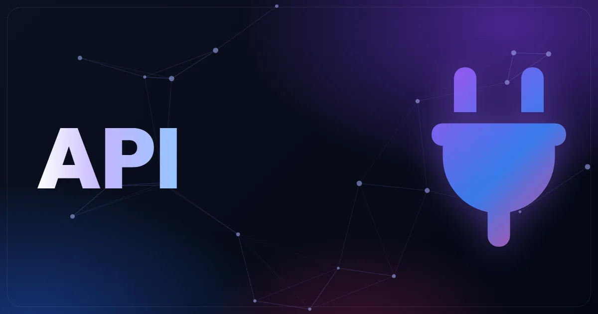
Популярность Facebook как рекламной площадки стремительно растет, но анализировать статистику в рекламном кабинете неудобно. Один из альтернативных способов — загрузить статистику в R и визуализировать ее. В этой статье я подробно расскажу, как получить данные из API Facebook и работать с ними в R.
R — язык программирования для статистической обработки данных и работы с графикой, а также свободная программная среда вычислений с открытым исходным кодом в рамках проекта GNU. Пользователи ежедневно выкладывают в свободный доступ новые полезные пакеты, поэтому библиотека пакетов R богатая и значительно расширяет базовые возможности языка.
Я написал ряд функций для работы с API Facebook и их собрал в пакет rfacebookstat, доступный на GitHub и CRAN.
1. Создайте приложение в Facebook
1.1. Чтобы начать работу с API Facebook, нужно создать новое приложение. Для этого перейдите по этой ссылке, или найдите пункт «Управление приложениями» в левом меню.
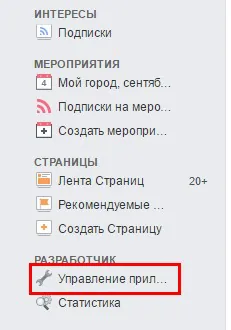
1.2. В кабинете разработчика нажмите кнопку «+ Добавить новое приложение».
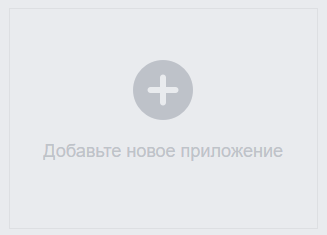
Заполните поля «Отображаемое название приложения»,«Эл. адрес для связи», «Категория» и нажмите «Создайте ID приложения».
1.3. Далее вы попадете в меню «Установка и настройка продукта». Кликните на кнопку «Начать» напротив пункта «Вход через Facebook».
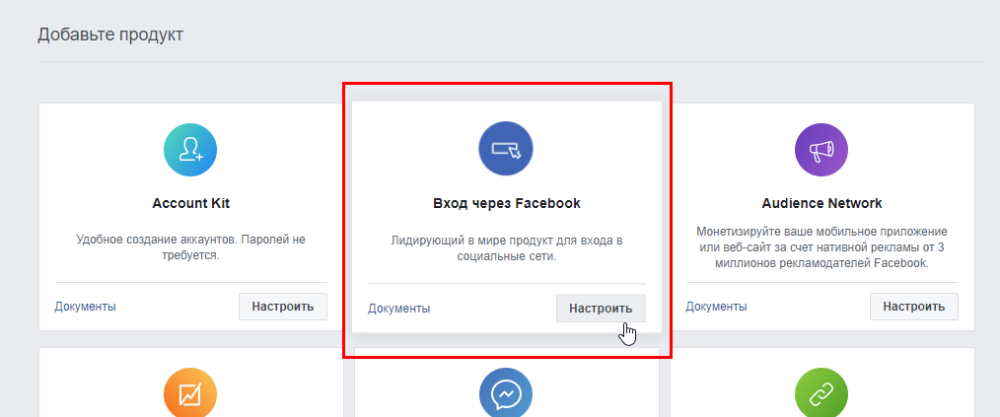
1.4. Выберите платформу веб.
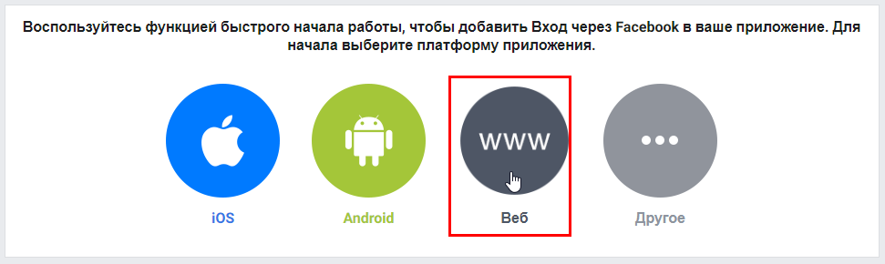
1.5. Вводим https://selesnow.githun.io в поле «URL сайта» и жмём Save — Продолжить — Далее…
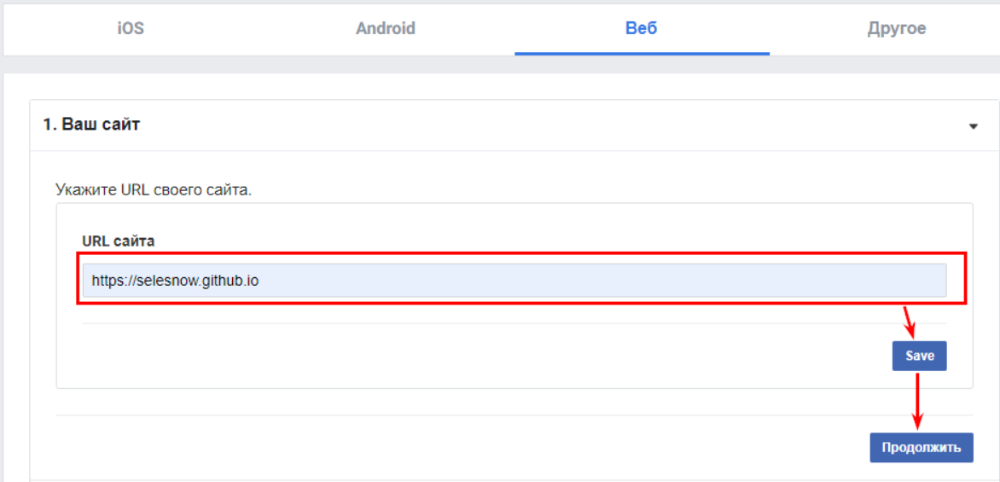
1.6. В меню приложения перейдите в раздел «Вход через Facebook». В поле «Действительные URL-адреса для перенаправления OAuth» введите «https://selesnow.github.io/rfacebookstat/getToken/get_token.html».
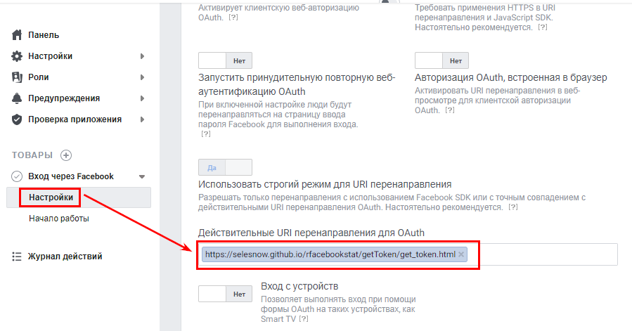
1.7. Подключаем ещё один продукт — «API Marketing»
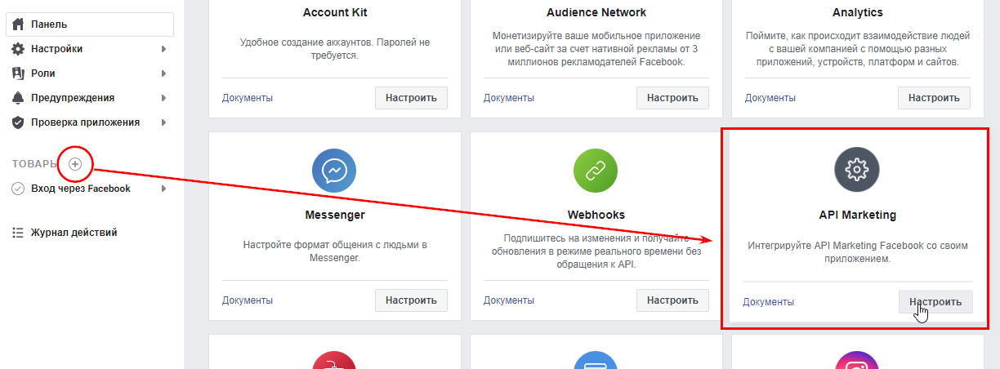
На этом создание и настройка приложения завершены. Перейдите в меню Настройка — Основное и скопируйте идентификатор и секрет приложения.
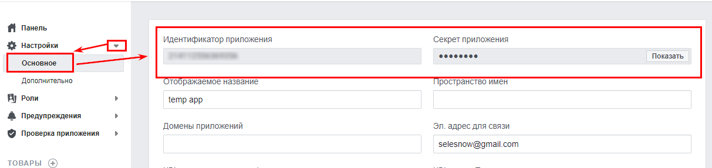
Эти данные нам понадобятся для авторизации.
Важно: многие ошибочно выводят своё приложения из статуса «В разработке», и при попытке авторизации получают ошибку, так как для публикации приложения необходимо пройти серьёзные проверки со стороны Facebook. К счастью, если вы регистрируете приложение для своих личных нужд то выводить его из разработки не требуется.
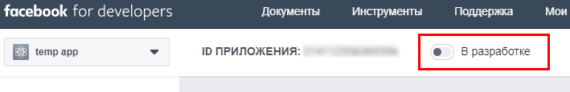
2. Установите пакет rfacebookstat
Пакет rfacebookstat доступен для установки из CRAN и GitHub.
2.1. Для установки пакетов с CRAN используйте стандартную команду install.packages().
install.packages("rfacebookstat")
2.2. Подключите пакет rfacebookstat.
Пакет можно рассматривать как отдельное программное обеспечение, поэтому, как и любую программу его необходимо сначала установить, и при каждой необходимости – запускать. В R подключение пакетов осуществляется функцией library().
library(rfacebookstat)
3. Получите токен для работы с API Facebook
Для начала работы с API Facebook осталось пройти авторизацию. Воспользуйтесь функцией fbAuth() в пакете rfacebookstat.
3.1. На вкладке «Настройки» —> «Основное» скопируйте ID и секрет вашего приложения и введите их в соответствующие аргументы функций.
fbAuth(app_id = 00000000000000,
app_secret = "xxxxxxxxxxxxx",
username = "ваш логин")
В аргумент username передайте ваш логин на Facebook.
3.2. Возможно, впервые получая токен, вы попадете на страницу с предупреждением, что некоторые разрешения еще не одобрены для использования Facebook. Пропустите это предупреждение с помощью кнопки «Продолжить как, …».
Подтвердите вход через Facebook.
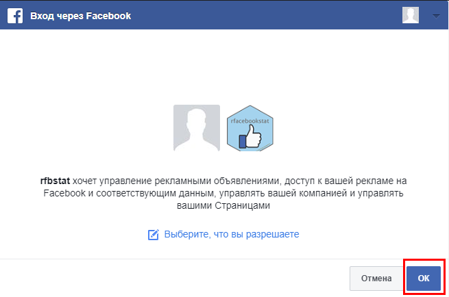
Далее вы будете перенаправлены на страницу сайта моих пакетов https://selesnow.github.io, где для вас будет сгенерирован краткосрочный авторизационный токен.
В своё время меня часто спрашивали о безопасности использования разработанных мной пакетов. Многих беспокоил именно процесс авторизации через мой сайт. Поэтому я написал о безопасности использования пакетов подробную статью «Насколько безопасно использовать R пакеты для работы с API рекламных систем».
Если у вас включён JavaScript, то токен автоматически будет скопирован в буфер обмена, и через 30 секунд вы будете перенаправлены на страницу с официальной справкой к пакету. Если вы отключили выполнение JavaScript, то самостоятельно скопируйте токен.
3.3. Полученный токен необходимо ввести в R консоль.
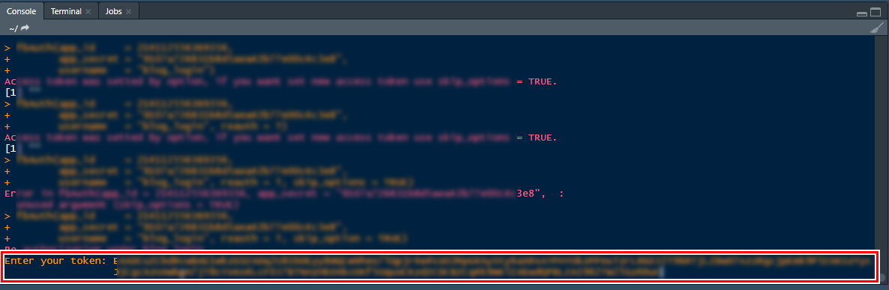
3.4. Далее ваш краткосрочный токен автоматически будет заменён на долгосрочный, и вы увидите в консоли сообщение:
Token changed to long time successfully
Do you want save your access token into rds file C:/Users/Username/Documents/blog_login.rfb_auth.rds for use it between R sessions ?
y / n (recmedation y) ?:
Первая строка сообщения говорит о том, что ваш краткосрочный токен был успешно заменён долгосрочным токеном. После, пакет спрашивает вас, хотите ли вы сохранить полученные учётные данные, что бы использовать в разных сессиях работы в R. Я крайне рекомендую вам отвечать на этот вопрос y, это избавить вас от необходимости постоянно проходить авторизацию через браузер.
3.5. Проверить, что авторизация была успешно пройдена можно запросив список доступных аккаунтов.
fbGetAdAccounts(username = "ваш логин")
Если вы получите список аккаунтов – значит авторизация пройдена успешно, если получите ошибку — то скорее всего вы неправильно настроили приложение.
4. Получите статистику по рекламным аккаунтам в Facebook
Мы завершили подготовительный этап и можем перейти непосредственно к импорту данных.
Основная функция пакета rfacebookstat — fbGetMarketingStat(). Рассмотрим подробнее работу с этой функцией, потому что с ее помощью можно получить любые данные об эффективности рекламного аккаунта.
4.1. Синтаксис
stat <- fbGetMarketingStat(accounts_id = "act_0000000000",
sorting = NULL,
level = "account",
breakdowns = NULL,
fields = "account_id,
campaign_name,
impressions,
clicks,
reach,
spend",
filtering = NULL,
date_start = Sys.Date() - 30,
date_stop = Sys.Date(),
username = getOption("rfacebookstat.username"),
token_path = fbTokenPath())
В приведённом выше коде представлены значения большинства аргументов функции fbGetMarketingStat() принятые по умолчанию.
4.2. Аргументы функции
4.2.1. accounts_id—ID рекламного аккаунта. Это обязательный аргумент. Вы можете получить его из URL, если перейдете в нужный рекламный аккаунт Facebook.
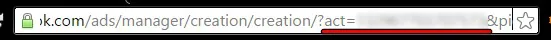
Так как указывать id рекламного аккаунта вам необходимо при каждом обращении к API, вы можете избежать дублирования этой информации, передав в начале скрипта список нужных аккаунтов в опцию rfacebookstat.accounts_id.
options( rfacebookstat.accounts_id = c("47725506", "361373151") )
После чего, каждая функция пакета rfacebookstat автоматически будет подтягивать указанные в опции rfacebookstat.accounts_id аккаунты.
4.2.2. sorting —cортировка данных. Необязательный аргумент. На входе принимает список полей и направление сортировки (по возрастанию или по убыванию). Пример: reach_descending, impressions_ascending.
4.2.3. level— основной уровень детализации данных. Обязательный аргумент. Принимает значения ad, adset, campaign, account. Пример — level = “account”.
4.2.4. fields— список полей, по которым вы планируете получить данные. Обязательный аргумент. Пример: fields = “account_id,account_name,campaign_name,impressions,unique_impressions,clicks,unique_clicks,reach,spend”.
Список доступных полей в версии API 2.8. смотрите в таблице ниже или официальной документации.
| Поле | Описание |
| account_idnumeric string | Идентификатор рекламного аккаунта, с которым связана ваша рекламная деятельность. Рекламный аккаунт включает кампании, объявления и биллинг.По умолчанию |
| account_namestring | Имя рекламного аккаунта, в котором сосредоточена ваша рекламная деятельность. Ваш рекламный аккаунт содержит кампании, объявления и биллинг. |
| action_valueslist |
Общая стоимость всех конверсий в результате просмотра рекламы. |
| actionslist |
Общее количество действий, которые люди выполняют после просмотра рекламы. Действия могут включать вовлеченность, клики или конверсии. |
| ad_idnumeric string | Уникальный идентификатор объявления, который вы видите в отчете.По умолчанию |
| ad_namestring | Уникальный ID объявления, который вы видите в отчете. |
| adset_idnumeric string | Уникальный идентификатор группы объявлений, который вы видите в отчете. Группа объявлений — это набор объявлений с одинаковыми настройками бюджета, графика показа, оптимизации и целевой аудитории.По умолчанию |
| adset_namestring | Название группы объявлений, которое вы видите в отчете. |
| app_store_clicksnumeric string | Количество кликов по ссылкам на магазин приложений в вашей рекламе. |
| buying_typestring | Способы оплаты, таргетинга и измерения результатов рекламы в кампаниях: динамические ставки, фиксированные ставки или покупка охвата и частоты. |
| call_to_action_clicksnumeric string | Метрика указывает, сколько раз люди нажали кнопку с призывом к действию в рекламе. |
| campaign_idnumeric string | Уникальный ID рекламной кампании, который вы видите в отчете. Кампания включает группы объявлений и отдельные рекламные объявления.По умолчанию |
| campaign_namestring | Название рекламной кампании в отчетах. Кампания включает группы объявлений и отдельные рекламные объявления. |
| canvas_avg_view_percentnumeric string | Среднее число просмотров Холста (в процентах). Холст — это экран, который открывается на мобильном устройстве после того, как человек нажимает ссылку Холста в вашей рекламе. Он может включать интерактивные или мультимедийные компоненты, такие как видео, изображения, каталоги продуктов и так далее. |
| canvas_avg_view_timenumeric string | Среднее время (в секундах), в течение которого люди просматривали Холст Facebook. Холст — это экран, который открывается на мобильном устройстве после того, как человек нажимает ссылку Холста в вашей рекламе. Он может включать интерактивные или мультимедийные компоненты, такие как видео, изображения, каталоги продуктов и так далее. |
| clicksnumeric string | Общее число нажатий вашего объявления. В это число могут входить сторонние клики на веб-сайт, отметки «Нравится» Страницы, комментарии к публикациям, ответы на приглашения или установки приложения |
| cost_per_10_sec_video_viewlist |
Средняя цена за каждый 10-секундный просмотр видео. |
| cost_per_action_typelist |
Средняя цена за актуальное действие. |
| cost_per_estimated_ad_recallersnumeric string | Средняя цена за приблизительный прирост запоминаемости рекламы на человека. |
| cost_per_inline_link_clicknumeric string | Средняя стоимость клика по каждой встроенной ссылке. |
| cost_per_inline_post_engagementnumeric string | Средняя стоимость вовлеченности для каждой встроенной публикации. |
| cost_per_total_actionnumeric string | Средняя цена за актуальное действие. |
| cost_per_unique_action_typelist |
Средняя цена каждого уникального действия. |
| cost_per_unique_clicknumeric string | Средняя цена за каждый уникальный клик по ссылке (все), полученный в результате вашей рекламы. |
| cost_per_unique_inline_link_clicknumeric string | Средняя цена каждого уникального клика по встроенной ссылке. |
| cpcnumeric string | Средняя цена за каждый клик в результате просмотра вашей рекламы. |
| cpmnumeric string | Средняя цена за 1 000 показов. |
| cppnumeric string | Средняя стоимость охвата 1 000 пользователей. |
| ctrnumeric string | Кликабельность для всех кликов. Общее количество полученных кликов (например, сторонние клики, отметки «Нравится», ответы на приглашения), деленное на количество показов. |
| date_startstring | Дата начала учета ваших данных. Эта метрика основана на диапазоне данных, который вы выбрали для своего представления отчетности.По умолчанию |
| date_stopstring | Дата окончания учета ваших данных. Эта метрика основана на диапазоне данных, который вы выбрали для своего представления отчетности.По умолчанию |
| deeplink_clicksnumeric string | Количество кликов по ссылкам на определенные части приложения. |
| estimated_ad_recall_ratenumeric string | Доля участников опроса (в процентах), которые вспомнили вашу рекламу в течение двух дней после просмотра. |
| estimated_ad_recallersnumeric string | Примерное количество людей, которые через два дня после просмотра могут вспомнить вашу рекламу, если их о ней спросят. Эта метрика показывает результативность рекламы с целями «Узнаваемость бренда», «Просмотры видео» и «Вовлеченность для публикации Страницы». |
| frequencynumeric string | Среднее количество просмотров рекламы каждым человеком. |
| impressionsnumeric string | Количество просмотров рекламы.По умолчанию |
| inline_link_click_ctrnumeric string | Процентное отношение просмотров вашей рекламы к кликам по встроенной ссылке. |
| inline_link_clicksnumeric string | Количество кликов по ссылкам на выбранные адреса, входящие или не входящие в состав объектов монетизации Facebook. Для кликов по встроенным ссылкам используется фиксированное окно атрибуции «1 день после клика». |
| inline_post_engagementnumeric string | Общее количество действий, выполненных людьми с вашей рекламой (или, в некоторых случаях, все публикации). Для вовлеченности от встроенных публикаций используется фиксированное окно атрибуции «один день после клика». |
| newsfeed_avg_positionnumeric string | Средняя позиция, где ваша реклама была вставлена в ленты новостей на мобильных устройствах и ПК. Первая позиция находится наверху ленты новостей. |
| newsfeed_clicksnumeric string | Общее количество кликов на вашу рекламу в лентах новостей пользователей на мобильных устройствах и ПК. |
| newsfeed_impressionsnumeric string | Общее количество вставок вашей рекламы в ленты новостей пользователей на мобильных устройствах и ПК. |
| objectivestring | Цель, которую вы выбрали для кампании. Цель отражает, чего вы хотите добиться с помощью рекламы. |
| reachnumeric string | Количество людей, которые хотя бы раз увидели вашу рекламу. Отличие охвата от показов заключается в том, что последние могут включать просмотры рекламы одним и тем же человеком. |
| relevance_scoreAdgroupRelevanceScore | Оценка от 1 до 10, обозначающая уровень реагирования целевой аудитории на вашу рекламу. Данный показатель отображается после 500 показов и только для объявлений (не отображается для групп объявлений и кампаний). |
| social_clicksnumeric string | Количество всех кликов, полученных рекламой (например, отметки «Нравится», ответы на приглашения, клики с других сайтов) при отображении с социальной информацией (например, Алине Ивановой это нравится). |
| social_impressionsnumeric string | Количество просмотров вашей рекламы с упоминанием того, что кто-то из друзей на Facebook взаимодействовал с вашей Страницей Facebook или рекламой. |
| social_reachnumeric string | Количество людей, которые увидели вашу рекламу с упоминанием того, что один из их друзей на Facebook взаимодействовал с вашей Страницей Facebook или рекламой. |
| social_spendnumeric string | Общая сумма, которую вы уже потратили на свою рекламу, которая дополняется социальной информацией (например, Петру Соколову это нравится). |
| spendnumeric string | Общая сумма, которую вы потратили на кампанию, группу объявлений или рекламу в период показа.По умолчанию |
| total_action_valuenumeric string | Общая стоимость всех конверсий в результате просмотра рекламы. |
| total_actionsnumeric string | Общее количество действий, которые люди выполняют после просмотра рекламы. Действия могут включать вовлеченность, клики или конверсии. |
| total_unique_actionsnumeric string | Количество людей, которые выполнили действие после просмотра рекламы. |
| unique_actionslist |
Количество людей, которые выполнили действие после просмотра рекламы. |
| unique_clicksnumeric string | Общее количество уникальных пользователей, нажавших на ссылку вашего рекламного объявления. Например, если три человека нажали одно и то же объявление пять раз, число уникальных кликов — три. |
| unique_ctrnumeric string | Уникальная кликабельность для всех кликов. Количество людей, нажавших рекламу в любом месте, разделенное на количество охваченных людей. Например, вы получили 20 уникальных кликов, а реклама была показана 1 000 уникальным пользователям. Значит, соотношение кликов к показам составляет 2%. |
| unique_impressionsnumeric string | Количество людей, видевших рекламу как минимум раз. |
| unique_inline_link_click_ctrnumeric string | Отношение количества просмотров рекламы к кликам по ссылке. Для кликабельности встроенных элементов используется фиксированное окно атрибуции «1 день после клика». |
| unique_inline_link_clicksnumeric string | Количество человек, выполнивших клик по встроенной ссылке. |
| unique_link_clicks_ctrnumeric string | Доля людей, которые посмотрели вашу рекламу и нажали ссылку. |
| unique_social_clicksnumeric string | Количество людей, которые нажали эту рекламу (например, отметки «Нравится», ответы на приглашения, клики с других сайтов), пока она отображалась с социальной информацией (например, Алине Ивановой это нравится). |
| unique_social_impressionsnumeric string | Количество людей, которым было показано объявление в контекстной рекламе. |
| video_10_sec_watched_actionslist |
Количество просмотров видео в течение как минимум 10 секунд или почти полностью (в зависимости от того, что произошло раньше). |
| video_15_sec_watched_actionslist |
Количество просмотров вашего видео в течение как минимум 15 секунд или почти полностью в зависимости от того, что наступило раньше. |
| video_30_sec_watched_actionslist |
Количество просмотров вашего видео в течение как минимум 30 секунд или почти полностью в зависимости от того, что наступило раньше. |
| video_avg_pct_watched_actionslist |
(Использование данной метрики будет скоро прекращено, используйте video_avg_percent_watched_actions). Это общее время просмотра видео, разделенное на количество просмотров видео в течение всей его продолжительности. Метрика недоступна для прямых эфиров. |
| video_avg_percent_watched_actionslist |
Среднее время просмотра видео (в процентах). |
| video_avg_sec_watched_actionslist |
(Использование данной метрики будет скоро прекращено, используйте video_avg_time_watched_actions). Это общее время просмотра видео, разделенное на общее количество просмотров видео. |
| video_avg_time_watched_actionslist |
Среднее время, в течение которого люди смотрели видео. |
| video_complete_watched_actionslist |
Количество просмотров видео в течение как минимум 30 секунд или почти полностью (в зависимости от того, что произошло раньше). |
| video_p100_watched_actionslist |
Количество раз, когда ваше видео было просмотрено в точке 100%, включая просмотры, когда человек прокрутил видео до этого момента. |
| video_p25_watched_actionslist |
Количество раз, когда ваше видео было просмотрено в точке 25%, включая просмотры, когда человек прокрутил видео до этого момента. |
| video_p50_watched_actionslist |
Количество раз, когда ваше видео было просмотрено в точке 50%, включая просмотры, когда человек прокрутил видео до этого момента. |
| video_p75_watched_actionslist |
Количество раз, когда ваше видео было просмотрено в точке 75%, включая просмотры, когда человек прокрутил видео до этого момента. |
| video_p95_watched_actionslist |
Количество раз, когда ваше видео было просмотрено в точке 95%, включая просмотры, когда человек прокрутил видео до этого момента. |
| website_clicksnumeric string | Количество кликов по ссылкам на сайт в вашей рекламе. |
| website_ctrlist |
Процентное отношение просмотров вашей рекламы к кликам по сайту. |
4.2.5. breakdowns — аргумент, с помощью которого можно получить данные в разбивке на различные сегменты. Можно разбивать информацию по следующим срезам:
- age;
- country;
- gender;
- frequency_value;
- hourly_stats_aggregated_by_advertiser_time_zone;
- hourly_stats_aggregated_by_audience_time_zone;
- impression_device;
- place_page_id;
- placement;
- device_platform;
- product_id;
- region;
- actions;
- publisher_platform;
- platform_position;
- impression_device.
В одном запросе можно комбинировать несколько срезов. На данный момент доступны следующие комбинации:
Поля, отмеченные звездочкой «*», могут запрашиваться вместе с action_type, action_target_id и action_destination.
- action_type *;
- action_target_id *;
- action_device *;
- action_device, placement *;
- action_device, placement, impression_device *;
- action_device, publisher_platform *;
- action_device, publisher_platform, impression_device *;
- action_device, publisher_platform, platform_position *;
- action_device, publisher_platform, platform_position, impression_device *;
- action_reaction;
- action_type, action_reaction;
- age *;
- gender *;
- age, gender *;
- country *;
- region *;
- placement *;
- placement, impression_device *;
- publisher_platform *;
- publisher_platform, impression_device *;
- publisher_platform, platform_position *;
- publisher_platform, platform_position, impression_device *;
- product_id *;
- hourly_stats_aggregated_by_advertiser_time_zone *;
- hourly_stats_aggregated_by_audience_time_zone *;
- action_carousel_card_id / action_carousel_card_name;
- action_carousel_card_id / action_carousel_card_name, placement;
- action_carousel_card_id / action_carousel_card_name, placement, impression_device;
- action_carousel_card_id / action_carousel_card_name, country;
- action_carousel_card_id / action_carousel_card_name, age;
- action_carousel_card_id / action_carousel_card_name, gender;
- action_carousel_card_id / action_carousel_card_name, age, gender.
Пример: breakdowns = “region”
4.2.6. filtering — фильтр данных. Необязательный аргумент. Фильтры задаются в виде JSON объектов «ключ:значение». Необходимо прописать три свойства:
- field — поле, по которому будет осуществляться фильтрация;
- operator — оператор логического значения (‘EQUAL’, ‘NOT_EQUAL’, ‘GREATER_THAN’, ‘GREATER_THAN_OR_EQUAL’, ‘LESS_THAN’, ‘LESS_THAN_OR_EQUAL’, ‘IN_RANGE’, ‘NOT_IN_RANGE’, ‘CONTAIN’, ‘NOT_CONTAIN’, ‘IN’, ‘NOT_IN’, ‘ANY’, ‘ALL’, ‘NONE’);
- value — значения, по которому будет фильтроваться указанное поле.
Пример: filtering = “impressions LESS_THAN 5000”
4.2.7. date_start — начальная дата отчетного периода в формате YYYY-MM-DDD.
4.2.8. date_stop — конечная дата отчетного периода в формате YYYY-MM-DDD.
4.2.9. api_version — версия API Facebook.
4.2.10. access_token — токен доступа.
5. Примеры использования функции fbGetMarketingStat
5.1. Перед тем как запускать описанные ниже примеры, сгенерируйте API-токен и сохраните его в виде файла, с помощью функции fbAuth().
fbAuth(app_id = 00000000000000,
app_secret = "xxxxxxxxxxxxx",
username = "ваш логин")
5.2. Чтобы получить статистику о количестве показов, кликов и затрат на рекламу на уровне аккаунта и в разрезе регионов, введите следующий код:
AccStat <- fbGetMarketingStat(
accounts_id = «act_0000000000»,
level = "account",
fields = "account_id,
account_name,
impressions,
clicks,
spend",
breakdowns = "region",
date_start = "2020-03-01",
date_stop = "2020-03-30",
username = "ваш логин")
5.3. Получите статистику по количеству уникальных показов и уникальных кликов, с фильтром по возрастным группам «18-24», «25-34» и сортировкой данных в порядке убывания количества уникальных показов (поле reach).
CampStat <- fbGetMarketingStat(accounts_id = "act_0000000000",
level = "campaign",
fields = "campaign_name,
reach,
unique_clicks",
breakdowns = "age",
sorting = "reach_descending",
filtering = "age IN 18-24,25-34",
date_start = "2020-03-01",
date_stop = "2020-03-30",
username = "ваш логин")
6. Официальные учебные материалы
Пакет rfacebookstat имеет хорошую русскоязычную документацию. В этом разделе приведу ряд ссылок, которые позволят вам максимально подробно разобраться со всеми его возможностями и особенностями синтаксиса.
Официальные ссылки:
- Виньетки: - авторизация в API facebook; - загрузки статистики из рекламных аккаунтов Facebook;
- Страница документации.
- Плейлист с видеоуроками.
- Страница пакета на CRAN.
- Страница проекта на GitHub.
Выводы
Используя API Facebook и пакет функций на языке R rfacebookstat, вы сможете:
- получить данные по своим рекламным аккаунтам, кампаниям, объявлениям и так далее во множестве различных разрезов.
- строить на основе полученных данных любые визуализации, используя всю мощь языка R.
- передавать полученные данные в любую базу данных или сохранять в виде CSV-файла.